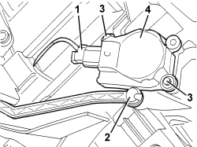

5040D79 MOTOR (ONE) CONTROLLING LH AIR CONDITIONER DISTRIBUTION/MIXER FLAPS R.R. WITH AIR CONDITIONER HOUSING REMOVED
- Path
- Procedures > 50 AUXILIARY UNITS > 5040 AIR CONDITIONING CASING AND COMPONENTS > 5040D AIR CONDITIONING CONTROLS > 5040D79 MOTOR (ONE) CONTROLLING LH AIR CONDITIONER DISTRIBUTION/MIXER FLAPS R.R. WITH AIR CONDITIONER HOUSING REMOVED
- Kind
- repair procedure (removal / refitting; the operation number is the code)
- Applies to
- all engines; all production periods
- Interactive page
- https://sloeber94.github.io/elrnDB-aBrrSpdr/en/#/946002286
Applies to: all engines; all production periods
 Removing
Removing
 Refitting
Refitting1. Disconnect the electrical connection.
2. When present, release the idler lever from the motor (ball fitting).
3. Undo the bolts.
4. Remove the motor by releasing the splined connection shaft.

Applies to: all engines; all production periods
Refitting
Removing- Check that the motor is not damaged.
- Position the motor and engage the splined connection shaft.
- Tighten the bolts.
- When present, fit the idler lever to the motor (ball fitting).
- Connect the electrical connection.
- When reconnecting the battery, wait a few minutes to allow the system to realign the actuators.
Topics that link to this page (9)
- L003 CLIMATE CONTROL AIR FLOW IRREGULAR
- L010 CLIMATE CONTROL NOT COOLING
- L012 CLIMATE CONTROL DOES NOT COOL TO THE DESIRED TEMPERATURE
- L015 CLIMATE CONTROL NOT HEATING
- L020 PASSENGER SIDE TEMPERATURE ADJUSTMENT DOES NOT WORK
- L021 REAR PASSENGER TEMPERATURE ADJUSTMENT NOT WORKING
- L025 AIR HEATING IS NOT ACTIVATED WITH LOW OUTSIDE TEMPERATURE
- L057 WINDSCREEN MISTING WITH THE FORMATION OF CONDENSATION
- 5040C16 AIR CONDITIONER HEATER/DISTRIBUTION UNIT HOUSING - DISMANTLE AT BENCH